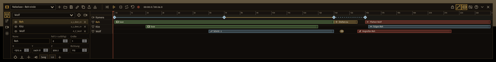
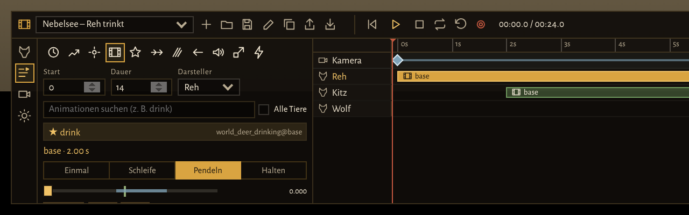
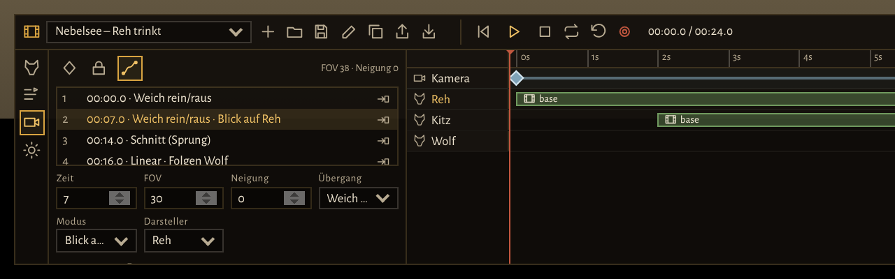
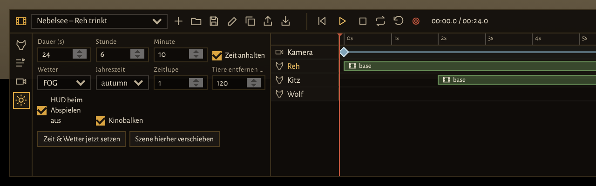
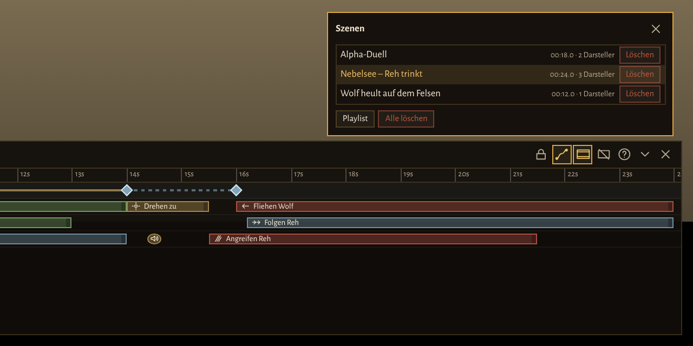

1 · Überblick
liw_cinematic ist ein Szenen-Baukasten für den Trailer des Servers. Du stellst Tiere als Darsteller in die Welt, gibst ihnen Schritte auf einer gemeinsamen Zeitleiste (laufen, drehen, Animation, folgen, angreifen, fliehen, Laute …), legst eine Kamerafahrt mit Keyframes an, stellst Uhrzeit, Wetter und Jahreszeit ein und spielst die Szene ab – zur Probe mit Baukasten oder als Aufnahme mit Countdown und ohne jede Oberfläche, bereit für OBS.

Nur für einen Aufnahme-Server. Auf dem Live-Server bleibt die Resource aus. Das Werkzeug macht das eigene Tier unsichtbar und unverwundbar und setzt Uhrzeit und Wetter für alle Spieler.
Wichtig zu wissen
- Darsteller sehen nur du. Es sind lokale Tiere auf deinem Rechner. Andere Spieler auf dem Server sehen sie nicht – aufgenommen wird von genau einer Person.
- Uhrzeit, Wetter und Jahreszeit sind die des Servers. Die sehen alle, und sie bleiben auch nach einem Neustart so (liw_world speichert sie).
- Alles läuft nach Zeit. Jeder Schritt und jeder Keyframe hat einen Zeitpunkt in Sekunden. Spulst du auf der Zeitleiste, springen Darsteller und Kamera an die passende Stelle.
- Szenen sind Dateien auf dem Server (
scenes/<id>.json) und lassen sich als JSON exportieren und woanders importieren.
2 · Einrichtung
Resource starten
In der server.cfg des Aufnahme-Servers nach den übrigen LiW-Resources:
ensure liw_cinematic
# Wer das Werkzeug benutzen darf (zusätzlich alle mit command.liwdev):
add_ace group.admin liw.cinematic allowAuf dem Live-Server bleibt die Zeile ensure liw_cinematic auskommentiert
(so steht es auch in docs/server.cfg.example).
Was dazugehört
| Resource | Wofür |
|---|---|
| liw_core | Grundbibliothek: Oberfläche, Rückfragen an den Server, Tasten, Boden finden, Modelle laden. |
| liw_ui | Die Oberfläche. Der Baukasten ist eine Komponente, die erst beim Öffnen geladen wird. Die Animationsliste kommt aus dem Animations-Browser. |
| liw_species | Die Arten (Modelle, Fell, Namen) für die Darstellerliste. |
| liw_world (optional) | Uhrzeit und Wetter. Ohne sie bleiben diese Felder wirkungslos. |
| liw_seasons (optional) | Jahreszeit. |
3 · Starten und Bewegen
Mit /liw_cine im Chat öffnest und schließt du den Baukasten.
- Solange er offen ist, ist dein eigenes Tier unsichtbar, eingefroren und unverwundbar, und niemand beachtet es. Es fliegt mit der Kamera mit, damit die Gegend geladen bleibt. Der Server gibt dafür laufend eine Schonfrist für seine Bewegungs- und Gesundheitsprüfung.
- Beim Schließen steht dein Tier wieder genau dort, wo es vorher stand.
- Die übrige Oberfläche (HUD, andere Menüs) ist ausgeblendet; nur Meldungen bleiben – bei einer Aufnahme verschwinden auch sie.
Die freie Kamera
| Taste | Wirkung |
|---|---|
| Rechte Maustaste halten | Umsehen |
| W A S D | Fliegen |
| Q / E | Runter / hoch |
| Shift / Alt | Schnell / langsam fliegen |
| Mausrad | Zoom (Sichtfeld, FOV) – klein = Teleobjektiv, groß = Weitwinkel |
| Alt + Mausrad | Kamera neigen (Roll) |
Über jedem Darsteller schwebt ein Namensschild. Ein Klick darauf wählt ihn aus. Wartet ein Werkzeug auf einen Punkt (Darsteller platzieren, Wegpunkte, Blickpunkt), setzt ein Linksklick in die Welt diesen Punkt; Esc bricht ab.
4 · Die Oberfläche
Die Leiste (oben im Baukasten)
Von links nach rechts:
- Szene: Auswahlliste der gespeicherten Szenen · Neu · Szenen (Liste mit Laden, Löschen, Playlist) · Speichern (Strg+S) · Umbenennen · Duplizieren · Export (JSON) · Import.
- Wiedergabe: Zum Anfang (Pos1) · Abspielen/Stopp (Leertaste) · Stopp · Schleife · Alle Darsteller auf den Anfang · Aufnahme (roter Knopf, Shift+R) · aktuelle Zeit / Szenendauer.
- Rechts: Kamera folgt beim Spulen ihrem Pfad · Pfade in der Welt zeigen · Kinobalken (B) · Baukasten ausblenden (H) · Tasten (F1) · Einklappen (Tab) · Schließen.
Der Inspektor (links) – vier Reiter
| Reiter | Inhalt |
|---|---|
| 1 · Darsteller | Tiere hinzufügen, auswählen, Name, Fell, Größe, Position, Richtung. |
| 2 · Schritte | Schritte des gewählten Darstellers hinzufügen und einstellen. |
| 3 · Kamera | Keyframes, Übergänge, Kameramodus, Handkamera, Tiefenschärfe. |
| 4 · Welt | Dauer, Uhrzeit, Wetter, Jahreszeit, Zeitlupe, Tiere entfernen, Kinobalken. |
Die Zeitleiste (rechts)
- Lineal: klicken oder ziehen = spulen. Der rote Strich ist der Cursor; neue Schritte und Keyframes landen an seiner Stelle.
- Kamerazeile: die Keyframes als Rauten. Ziehen verschiebt sie.
- Eine Spur je Darsteller mit seinen Schritten als Blöcken:
- Block ziehen = verschieben, rechten Rand ziehen = Dauer ändern.
- Alt beim Ziehen = ohne Raster.
- Doppelklick auf eine freie Stelle der Spur = Menü „Schritt hinzufügen“ an dieser Zeit.
- Strg+Mausrad = Zoom der Zeitleiste.
In der Welt zeigt der Baukasten beim Bearbeiten den Kamerapfad in Blau, die Keyframes und die Wege der Darsteller (gelb = ausgewählter Darsteller).
5 · Darsteller
Welche Tiere
- Jede Art aus liw_species (beim Hirsch getrennt nach Ricke und Bock).
- Die legendären Tiere aus Red Dead Online, z. B.
mp_a_c_wolf_01,mp_a_c_bear_01,mp_a_c_buck_01(Liste inConfig.ExtraModels). - „Anderes Modell …“: jedes Tiermodell, das mit
a_c_odermp_a_c_beginnt.
Hinzufügen
- Reiter Darsteller (1), oben das Tier wählen.
- Die Kamera auf die Stelle richten und „Dort hinzufügen, wohin die Kamera schaut“ (Fadenkreuz-Knopf) – oder „Unter der Kamera hinzufügen“.
- Feinjustieren (siehe unten), mit G auf den Boden setzen.
Einstellungen eines Darstellers
| Feld | Bedeutung |
|---|---|
| Name | Steht im Namensschild und in der Zeitleiste, z. B. „Held (Wolf)“. |
| Fell (-1 zufällig) | Nummer des Fell-Presets. -1 nimmt bei jedem Laden ein zufälliges – für einen Trailer lieber eine feste Nummer. |
| Größe | 1 = normal (0,2–3). Knopf „Jung“ setzt die Jungtiergröße der Art. |
| X / Y / Z, Richtung | Position und Blickrichtung in Grad. |
| Auge | Ein-/ausblenden (z. B. ein Tier, das erst später per Teleport auftaucht). |
Mit Tasten ausrichten
| Taste | Wirkung |
|---|---|
| ← → ↑ ↓ | Verschieben, relativ zur Kamera (Shift: 1 m pro Druck) |
| Bild ↑ / Bild ↓ | Höher / tiefer |
| , / . | Drehen (Shift: 45°) |
| G | Auf den Boden setzen |
| P | Zum Fadenkreuz (dorthin, wohin die Kamera schaut) |
| F | Kamera zum Darsteller (ins Bild holen) |
| Entf | Darsteller löschen |
Darsteller reagieren nicht von selbst: Sie fliehen nicht, erschrecken nicht, sind unverwundbar und in einer eigenen Gruppe. Das Werkzeug erneuert das alle 0,5 Sekunden – sie tun nur, was ihre Schritte sagen.
6 · Schritte
Ein Schritt ist eine Anweisung an einen Darsteller mit Start und Dauer in Sekunden. Hinzufügen: Darsteller wählen, Cursor an die Startzeit, im Reiter Schritte (2) das Symbol des Typs anklicken – oder Doppelklick auf die Spur.
| Typ | Was passiert | Felder |
|---|---|---|
| Warten | Steht still. | – |
| Gehe zu | Läuft einen Pfad ab. Punkte nacheinander in die Welt klicken, Esc beendet. | Punkte, Gangart (Schritt/Trab/Lauf), „Um Hindernisse“ (Navmesh) |
| Drehen zu | Dreht sich zu einem Punkt, einem anderen Darsteller oder zur Kamera. | Ziel |
| Animation | Spielt einen Clip, mit Frame-Steuerung (Kapitel 7). | Clip, Modus, Start/Ende, A/B, Tempo, Ein-/Ausblenden |
| Szenario | Ein Spiel-Szenario, z. B. WORLD_ANIMAL_WOLF_HOWLING. Vorschläge in der Liste, freier Text geht auch. | Name |
| Folgen | Folgt einem anderen Darsteller. | Ziel, Abstand (m), Gangart |
| Angreifen | Gespielt: läuft hin und spielt die Angriffsanimation der Art, ohne Schaden. Echter Kampf: richtiger Kampf, beide bleiben unverwundbar. | Ziel, „Echter Kampf“ |
| Fliehen | Flieht vor einem anderen Darsteller. | Vor, Abstand (m) |
| Laut | Ein Tierlaut wie howl, growl, roar, snort – sofort. | Laut |
| Größe | Ändert die Größe – sofort beim Start. | Wert |
| Teleport | Setzt den Darsteller an einen Punkt – sofort beim Start. | Punkt, Richtung |
Bearbeiten
- Strg+C kopiert den gewählten Schritt, Strg+V fügt ihn am Cursor ein, Strg+D dupliziert ihn direkt dahinter, Entf löscht.
- Strg+Z / Strg+Y: rückgängig / wiederholen.
- Ein Darsteller tut immer nur eins: Überlappen sich zwei seiner Schritte, gilt der später begonnene.
Ausnahme sind die sofortigen Schritte Laut, Größe und Teleport – die dürfen mitten in einem anderen Schritt
liegen (z. B. ein
howlwährend eines Szenarios).
Beispiel – Wolf läuft zum Felsen und heult: „Gehe zu“ von 0 bis 6 s (drei Punkte bis zum
Felsen, Gangart Trab), „Drehen zu“ Kamera von 6 bis 7 s, „Szenario“ WORLD_ANIMAL_WOLF_HOWLING
von 7 bis 14 s, dazu bei 7,5 s ein „Laut“ howl.
7 · Animationen und Frame-Steuerung
Der Animationsschritt kann mehr als „Clip abspielen“: Er bestimmt genau, welcher Teil des Clips zu sehen ist. Typischer Fall: Das Reh soll schon trinken, wenn die Szene beginnt – nicht erst den Kopf senken.

Clip wählen
Die Suche durchsucht die Animationsliste des Spiels (z. B. drink, howl,
sleep). Zuerst stehen die Gruppen der Art des Darstellers (Wolf → wolf, Puma → cougar/bigcat …);
„Alle Tiere“ sucht überall. Ein ★ markiert Clips, die die Art im Spiel schon benutzt.
Die Phase
Jede Stelle eines Clips hat eine Phase zwischen 0 (Anfang) und 1 (Ende). 0,5 ist die Mitte. Alle Frame-Angaben sind Phasen.
| Feld | Bedeutung |
|---|---|
| Start / Ende | Ab welcher Phase der Clip beginnt / bis wohin er (im Modus Einmal) läuft. |
| A / B | Der Bereich, der bei Schleife und Pendeln wiederholt wird. |
| Frame | Die eingefrorene Phase im Modus Halten. |
| Tempo | 1 = normal, 0,5 = halb so schnell, 2 = doppelt. |
| Einblenden / Ausblenden | Wie weich der Übergang von und zur vorherigen Bewegung ist (größer = schneller). |
Die vier Modi
| Modus | Ablauf | Gut für |
|---|---|---|
| Einmal | Start → Ende, dann bleibt der End-Frame stehen. | Aufstehen, Hinlegen, ein einzelner Biss |
| Schleife | Start → B, dann immer wieder A → B. | Fressen, Graben, Kauen |
| Pendeln | Start → B, dann B → A → B hin und her. | Trinken: Der Kopf bleibt unten |
| Halten | Ein einzelner Frame, eingefroren. | Standbild, Pose am Gedenkstein |
Pendeln, Start 0,45 · A 0,40 · B 0,70
Phase 0,45 ──▶ 0,70 ──▶ 0,40 ──▶ 0,70 ──▶ 0,40 …
Start B A B A
(Kopf schon im Wasser, hebt ihn nie ganz)Den richtigen Frame finden
- Den Phasen-Regler ziehen – der Darsteller zeigt den Frame sofort in der Welt.
- An der gewünschten Stelle → Start, → Ende, → A, → B oder → Frame drücken: Die Reglerstellung wird übernommen.
- „Dauer anpassen“ setzt die Schrittdauer genau auf die Zeit von Start bis Ende.
- T testet den Schritt am Darsteller.
Die Phase hängt nur von der Zeit ab. Abspielen und Spulen zeigen daher immer denselben Frame – was du beim Spulen siehst, ist auch in der Aufnahme.
8 · Kamera

Keyframes setzen
- Cursor an die Zeit stellen (J/L = ±0,1 s, mit Shift ±1 s).
- Mit der freien Kamera die Einstellung suchen (Position, Blick, Zoom, Neigung).
- K drücken – ein Keyframe mit genau dieser Einstellung entsteht.
Zwischen den Keyframes fährt die Kamera auf einer weichen Kurve (Spline) – auch bei unterschiedlichen Abständen ohne Ruckeln. In der Liste übernimmt der Pfeil-Knopf die aktuelle Kamera in einen bestehenden Keyframe, ein anderer Knopf springt mit Kamera und Cursor zu ihm.
Übergang (je Abschnitt bis zum nächsten Keyframe)
| Übergang | Wirkung |
|---|---|
| Weich rein/raus | Langsam los, langsam an – der Standard für ruhige Fahrten. |
| Weich rein / Weich raus | Nur am Anfang bzw. nur am Ende weich. |
| Linear | Gleichmäßiges Tempo – gut für Verfolgungen. |
| Schnitt (Sprung) | Kein Übergang: Die Kamera springt beim nächsten Keyframe dorthin. So baust du Schnitte innerhalb einer Szene. |
Modus je Keyframe
| Modus | Wirkung |
|---|---|
| Frei | Genau die gespeicherte Position und Blickrichtung. |
| Blick auf | Position wie gespeichert, schaut aber immer auf einen Darsteller – er bleibt im Bild, auch wenn er läuft. |
| Blick auf Punkt | Schaut auf einen in die Welt geklickten Punkt. |
| Folgen | Fährt mit dem Darsteller mit. Der Versatz x y z gilt relativ zu seiner Blickrichtung: x = seitlich (rechts positiv), y = vor/hinter ihm (negativ = hinter), z = Höhe. Standard 0 / -4 / 1,5 = vier Meter hinter dem Tier, leicht erhöht. |
Handkamera und Tiefenschärfe
- Handkamera (°) und Wackeltempo: leichtes Wackeln wie von Hand gehalten. Es ist berechnet, nicht zufällig – jeder Durchlauf wackelt gleich. 0,2–0,5° wirkt natürlich.
- Tiefenschärfe (experimentell): Fokus in Metern (0 = automatisch) und Stärke der Unschärfe.
9 · Welt

| Feld | Bedeutung |
|---|---|
| Dauer (s) | Länge der Szene (bis 600 s). |
| Stunde / Minute, Zeit anhalten | Uhrzeit beim Abspielen, auf Wunsch angehalten (gleiches Licht bei jedem Durchlauf). |
| Wetter | z. B. FOG, SUNNY, RAIN, SNOW – „unverändert“ lässt das aktuelle. |
| Jahreszeit | spring / summer / autumn / winter – oder „Kalender“. |
| Zeitlupe | 0,05–1. Die ganze Szene (auch die Zeitleiste) läuft langsamer. |
| Tiere entfernen (m) | Räumt beim Abspielen den Umkreis: eigene Tiere werden gelöscht, fremde lokal ausgeblendet, Umgebungstiere abgeschaltet. 0 = aus. |
| HUD beim Abspielen aus | Blendet beim Abspielen alles aus. |
| Kinobalken | Schwarze Balken im Format 2,39 : 1. Sie werden mit aufgenommen – ausschalten, wenn du sie lieber im Schnitt setzt. |
„Zeit & Wetter jetzt setzen“ stellt Uhrzeit, Wetter und Jahreszeit sofort auf dem Server ein (beim Abspielen passiert das sowieso). „Szene hierher verschieben“ versetzt die ganze Szene – Darsteller, Wege, Punkte und Kamera – so, dass der erste Darsteller dort steht, wohin die Kamera schaut. Danach bei jedem Darsteller G drücken.
10 · Abspielen und Aufnahme
Probe
- Leertaste spielt ab dem Cursor ab und stoppt wieder, Shift+Leertaste von vorn.
- Schleife: die Szene läuft immer wieder.
- „Alle Darsteller auf den Anfang“ stellt alles auf Sekunde 0 zurück.
- „Kamera folgt beim Spulen“ an: Beim Spulen springt die Kamera mit. Aus: Du kannst die Szene beim Spulen von außen betrachten.
Aufnahme
- Szene speichern.
- Aufnahmeprogramm (z. B. OBS) vorbereiten und starten.
- Aufnahme (roter Knopf oder Shift+R): Baukasten und Mauszeiger verschwinden, Countdown 3-2-1, die Szene läuft von vorn.
- Am Ende bleibt das letzte Bild 1,5 s stehen, dann kommt der Baukasten zurück.
Tipp: Den Countdown im Schnitt einfach wegschneiden. H blendet den Baukasten auch ohne Aufnahme aus; die Taste H im Spiel (Tastenbelegung „liw_cine_ui“) holt ihn zurück.
11 · Szenen verwalten

- Speichern (Strg+S) legt
scenes/<id>.jsonauf dem Server an. Bis zu 200 Szenen, je Datei höchstens 512 KB. - Duplizieren speichert eine Kopie („… (Kopie)“) – gut für Varianten einer Einstellung.
- Export (JSON): Die Szene erscheint als Text zum Kopieren. „Alle Szenen“ exportiert alle gespeicherten Szenen in einem JSON.
- Import: JSON einfügen (Strg+V). Eine einzelne Szene wird geöffnet und muss dann gespeichert werden; eine Datei mit mehreren Szenen wird gleich als neue Szenen gespeichert.
- Alle löschen fragt mit einem zweiten Klick nach.
Playlist
Im Dialog „Szenen“ → Playlist: Szenen anhaken und eine Pause dazwischen wählen. Die Szenen laufen nach Namen sortiert – nummeriere sie deshalb wie im Storyboard („01 …“, „02 …“, „13a …“).
- Abspielen: jede Szene von vorn, der Baukasten bleibt sichtbar. Stopp oder H beendet.
- Aufnehmen: ein Countdown, dann alle Szenen am Stück ohne Baukasten – der ganze Trailer in einer Aufnahme. H beendet.
- Uhrzeit, Wetter und Jahreszeit kommen aus jeder Szene. Vorher muss die offene Szene gespeichert sein.
Das Trailer-Storyboard
In storyboard/trailer.json liegt das Storyboard des Trailers als 21 fertige Rohszenen
(Beschreibung in docs/research/TRAILER_STORYBOARD.md). Inhalt kopieren, im Baukasten
Import – alle 21 Szenen sind gespeichert. Danach jede Szene laden, mit „Szene hierher
verschieben“ an den gewünschten Ort bringen, Darsteller mit G auf den Boden setzen und Kamera und
Schritte feinjustieren.
12 · Beispiele
Beispiel 1: Reh trinkt am nebligen See (20 s)
/liw_cine, mit gehaltener rechter Maustaste und WASD ans Seeufer fliegen.- Reiter Welt: Dauer
20, Stunde6, Minute10, „Zeit anhalten“, WetterFOG, Jahreszeitautumn, Tiere entfernen120, dann „Zeit & Wetter jetzt setzen“. - Reiter Darsteller: „Weißwedelhirsch ♀“, Kamera aufs Ufer richten, Fadenkreuz-Knopf. Mit Pfeiltasten und , . ausrichten, bis das Reh zum Wasser schaut; G.
- Reiter Schritte: Animation am Cursor (0 s), Dauer
20. Suchedrink base, Clipamb_creature_mammal@world_deer_drinking@base / base. - Phasen-Regler ziehen bis der Kopf im Wasser ist (z. B.
0,45) → → Start. - Modus Pendeln. Regler auf den tiefsten Punkt (
0,40) → → A, kurz bevor der Kopf sich hebt (0,70) → → B. Tempo0,8. Mit T testen. - Kamera: Pos1, schöne Totale suchen, K. Cursor auf 8 s, näher heran, mit dem Mausrad enger zoomen, K. Im Reiter Kamera beim zweiten Keyframe Modus „Blick auf“ → Reh.
- Leertaste zur Probe, Strg+S, dann Shift+R für die Aufnahme.
Beispiel 2: Jagd über die Wiese (5 s, Kamera fährt seitlich mit)
Aus dem Storyboard: Ein Wolf jagt einen Gabelbock, die Kamera fährt neben dem Wolf her.
Zeit 0s ─────────────────────────────── 5s
Kamera ◆ Folgen Wolf, Versatz 8/0/1,2 ──── ◆ Folgen Wolf, Versatz 8/2/1,2 (Linear)
Gabelbock [ Fliehen vor Wolf, 80 m ─────────────────── ]
Wolf [ Folgen Gabelbock, 2,5 m, Lauf ───────────── ]- Gabelbock und 18 m dahinter einen Wolf platzieren.
- Gabelbock: „Fliehen“, 0–5 s, vor Wolf, Abstand
80. - Wolf: „Folgen“, 0–5 s, Ziel Gabelbock, Abstand
2,5, Gangart Lauf. - Zwei Keyframes bei 0 s und 5 s, beide Modus „Folgen“ → Wolf, Übergang „Linear“. Versatz beim ersten
8 / 0 / 1,2(8 m rechts), beim zweiten8 / 2 / 1,2– die Kamera schiebt sich langsam nach vorn. - Handkamera
0,25für etwas Leben. Welt: 10:00 Uhr, Sommer, Kinobalken.
Beispiel 3: Wolf heult auf dem Felsen bei Vollmond
- Darsteller
mp_a_c_wolf_01(legendärer Wolf) auf den Felsen, Blick zum Mond. - Welt: Stunde
23, Zeit anhalten, WetterSUNNY(klarer Himmel), Zeitlupe0,7. - Schritte: Szenario
WORLD_ANIMAL_WOLF_HOWLING0–10 s, dazu Lauthowlbei 1 s und 6 s. - Kamera: von unten nach oben am Felsen hoch, Modus „Blick auf“ → Wolf, Übergang „Weich rein/raus“.
Beispiel 4: Rudel läuft den Hügel hinauf
- Vier Wölfe nebeneinander am Hangfuß platzieren.
- Je Wolf ein „Gehe zu“ mit Gangart Lauf und Punkten bis zur Kuppe – versetzt starten: Alpha bei 0 s, die anderen bei 0,4 / 0,7 / 1,1 s. So wirkt das Rudel natürlich statt im Gleichschritt.
- Mit Strg+C / Strg+V den Schritt des Alphas kopieren und bei den anderen einfügen, dann nur die Punkte leicht versetzen.
- Kamera: tief am Boden vor dem Rudel, Modus „Blick auf Punkt“ auf die Kuppe – die Tiere laufen ins Bild.
Beispiel 5: Schnitt innerhalb einer Szene
Totale und Nahaufnahme ohne zweite Szene: Keyframe A (Totale) bei 0 s, Keyframe B (Totale, leicht bewegt) bei 4 s, Übergang von B auf „Schnitt (Sprung)“, Keyframe C (Nahaufnahme) bei 4,1 s. Bei 4 s springt das Bild hart auf die Nahaufnahme.
13 · Szenen-Datei (JSON)
Der Export und die Dateien in scenes/ haben dieses Format. Der Server prüft jede Szene beim
Speichern: Unbekannte Felder fallen weg, Zahlen werden begrenzt, Verweise auf fehlende Darsteller entfernt.
{
"v": 1,
"name": "04 Jagd über die Wiese",
"duration": 5,
"world": { "hour": 10, "minute": 0, "freeze": true, "weather": "", "season": "summer",
"timeScale": 1.0, "hideHud": true, "letterbox": true, "clearRadius": 150 },
"actors": [
{ "id": "prey", "name": "Gabelbock", "model": "a_c_pronghorn_01", "species": "pronghorn",
"variant": -1, "scale": 1.0, "pos": { "x": -707.57, "y": 683.43, "z": 60.19 }, "h": 0 },
{ "id": "hero", "name": "Held (Wolf)", "model": "A_C_Wolf", "species": "wolf",
"variant": -1, "scale": 1.0, "pos": { "x": -707.57, "y": 665.43, "z": 60.19 }, "h": 0 }
],
"steps": [
{ "id": "s1", "actor": "prey", "type": "flee", "t": 0, "d": 5, "other": "hero", "dist": 80 },
{ "id": "s2", "actor": "hero", "type": "follow", "t": 0, "d": 5, "other": "prey", "dist": 2.5, "speed": "run" }
],
"cam": {
"keys": [
{ "id": "k1", "t": 0, "x": -693.57, "y": 673.43, "z": 61.69, "rx": 0, "ry": 0, "rz": 0, "fov": 45,
"ease": "linear", "mode": "follow", "target": "hero", "off": { "x": 8, "y": 0, "z": 1.2 } },
{ "id": "k2", "t": 5, "x": -693.57, "y": 723.43, "z": 61.69, "rx": 0, "ry": 0, "rz": 0, "fov": 45,
"ease": "linear", "mode": "follow", "target": "hero", "off": { "x": 8, "y": 2, "z": 1.2 } }
],
"shake": 0.25, "shakeFreq": 1, "dof": false
}
}Felder der Schritte
| type | Zusätzliche Felder |
|---|---|
wait | – |
move | points (Liste von x/y/z), speed walk | trot | run, nav true/false |
face | target point | actor | camera, pos, other |
anim | dict, anim, mode once | loop | pingpong | hold, from, to, a, b, hold (Phasen 0–1), speed, blendIn, blendOut |
scenario | name |
follow | other, dist, speed |
attack | other, real (true = echter Kampf) |
flee | other, dist |
vocal | name |
scale | value |
teleport | pos, h |
Allen gemeinsam: id, actor, t (Start in s), d (Dauer in s).
Kamera-Keyframes: t, Position x y z, Rotation rx ry rz, fov,
ease (inout | in | out | linear | cut), mode (free | look | point | follow),
target (Darsteller), pt (Blickpunkt), off (Versatz bei follow).
Mehrere Szenen in einer Datei: { "format": "liw-cinematic-scenes", "v": 1, "scenes": [ … ] }.
14 · Einstellungen
In config.lua der Resource oder im Einstellungen-Reiter des Admin-Menüs:
| Wert | Bedeutung | Standard |
|---|---|---|
Ace | Recht für das Werkzeug (zusätzlich command.liwdev) | liw.cinematic |
Limits | Darsteller, Schritte, Keyframes, Wegpunkte, Länge (s), Dateigröße (KB), Anzahl Szenen | 24 / 400 / 120 / 32 / 600 / 512 / 200 |
Camera | Fluggeschwindigkeit (normal, Shift, Alt), Maus-Empfindlichkeit, FOV-Grenzen, Pfadvorschau | 0,25 / 1,5 / 0,04 m pro Bild, FOV 45 (5–110) |
Actors | Tempo der Gangarten, Ankunftsabstand, Höhe der Namensschilder, Takt der Beruhigung | Schritt 1, Trab 2, Lauf 3; 1 m; 500 ms |
Anim | Flags des Clips, timeInSeconds, Wartezeit beim Start, Takt gespielter Bisse | 1, false, 500 ms, 1300 ms |
Player | Eigenes Tier: mitfliegen ab Abstand, Schonfrist, Rückkehr beim Schließen | 60 m, 60 s, an |
Playback | Countdown, Halten am Ende, Zeitlupe für die Zeitleiste, UI-Takt, Pause der Playlist | 3 s, 1500 ms, an, 50 ms, 600 ms |
World.weatherTransition | Überblendung beim Wetterwechsel in Sekunden | 0 |
Keys.ui | Taste, die den ausgeblendeten Baukasten zurückholt (erst nach Neustart) | H |
Scenarios, Vocals | Vorschläge in den Listen (freier Text geht trotzdem) | – |
ExtraModels | Zusätzliche Modelle in der Darstellerliste | legendäre Tiere |
AnimGroups | Welche Animationsgruppen je Art zuerst erscheinen | – |
15 · Alle Tasten
F1 zeigt die Übersicht auch im Baukasten.
| Taste | Funktion |
|---|---|
| W A S D, Q / E | Kamera fliegen, runter / hoch |
| Shift / Alt | Schnell / langsam |
| Rechte Maustaste halten | Umsehen |
| Mausrad / Alt+Mausrad | FOV / Neigung |
| Leertaste / Shift+Leertaste | Abspielen/Stopp ab Cursor / von vorn |
| J / L (Shift: 1 s), Pos1 / Ende | Cursor -/+ 0,1 s, Anfang / Ende |
| K | Kamera-Keyframe am Cursor |
| Pfeiltasten (Shift: 1 m), Bild ↑ / Bild ↓ | Darsteller verschieben, Höhe |
| , . (Shift: 45°) | Darsteller drehen |
| G / P / F | Darsteller auf den Boden / zum Fadenkreuz / Kamera zum Darsteller |
| T | Animationsschritt testen |
| Strg+C / V / D, Entf | Schritt kopieren / einfügen / duplizieren, löschen |
| Strg+Z / Y / S | Rückgängig / wiederholen / speichern |
| 1–4, Tab | Reiter wechseln, einklappen |
| B / H / Shift+R | Kinobalken / Baukasten aus / Aufnahme |
| Esc | Punktwahl abbrechen, Dialog schließen, Auswahl aufheben |
| H (im Spiel) | Ausgeblendeten Baukasten zurückholen |
16 · Probleme und Grenzen
| Problem | Lösung |
|---|---|
| „/liw_cine“ tut nichts | Fehlendes Recht: add_ace … liw.cinematic allow oder command.liwdev. Läuft die Resource (ensure liw_cinematic)? |
| Tier schwebt oder steckt im Boden | G drücken. Nach „Szene hierher verschieben“ und nach einem Import bei jedem Darsteller. |
| Spulen zeigt den falschen Frame | In den Einstellungen Anim.timeInSeconds umschalten (das Spiel erwartet dann Sekunden statt der Phase). |
| Fremde Tiere laufen durchs Bild | Welt → „Tiere entfernen“ auf 100–150 m. |
| Fell wechselt bei jedem Laden | Fell nicht auf -1, sondern auf eine feste Nummer stellen. |
| Andere Spieler sehen die Szene nicht | So gewollt: Darsteller sind lokal. Nur Uhrzeit, Wetter und Jahreszeit gelten für alle. |
| Szenario passiert nichts | Nicht jedes Szenario passt zu jeder Art. Alternativ eine Animation mit Modus Schleife nehmen. |
| Playlist startet nicht | Erst die offene Szene speichern. |
Im Spiel noch nicht bestätigt
- Ob das Setzen des Frames die Phase (0–1) oder Sekunden erwartet – daher der Schalter
timeInSeconds. - Die Tiefenschärfe.
- Das Abschalten der Umgebungstiere und -menschen, einzelne Szenario-Namen und Modelle der Vorschlagslisten.